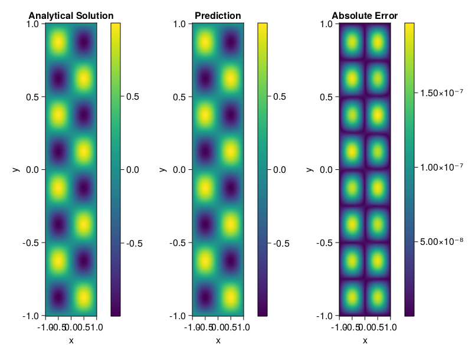

Helmholtz equation
Let us consider the Helmholtz equation in two space dimensions
\[\begin{aligned} &\Delta u(x, y)+k^{2} u(x, y)=q(x, y), \quad(x, y) \in \Omega:=(-1,1)^2 \\ &u(x, y)=0, \quad(x, y) \in \partial \Omega \end{aligned}\]
where
\[q(x, y)=-\left(a_{1} \pi\right)^{2} \sin \left(a_{1} \pi x\right) \sin \left(a_{2} \pi y\right)-\left(a_{2} \pi\right)^{2} \sin \left(a_{1} \pi x\right) \sin \left(a_{2} \pi y\right)+k^{2} \sin \left(a_{1} \pi x\right) \sin \left(a_{2} \pi y\right).\]
The excat solution is $u(x,y)=\sin{a_1\pi x}\sin{a_2\pi y}$. We chose $k=1, a_1 = 1$ and $a_2 = 4$.
using ModelingToolkit, IntervalSets, Sophon, Lux
using Optimization, OptimizationOptimJL
@parameters x,y
@variables u(..)
Dxx = Differential(x)^2
Dyy = Differential(y)^2
a1 = 1
a2 = 4
k = 1
q(x,y) = -(a1*π)^2 * sin(a1*π*x) * sin(a2*π*y) - (a2*π)^2 * sin(a1*π*x) * sin(a2*π*y) + k^2 * sin(a1*π*x) * sin(a2*π*y)
eq = Dxx(u(x,y)) + Dyy(u(x,y)) + k^2 * u(x,y) ~ q(x,y)
domains = [x ∈ Interval(-1,1), y ∈ Interval(-1,1)]
bcs = [u(-1,y) ~ 0, u(1,y) ~ 0, u(x, -1) ~ 0, u(x, 1) ~ 0]
@named helmholtz = PDESystem(eq, bcs, domains, [x,y], [u(x,y)])\[ \begin{align} \frac{\mathrm{d}^{2}}{\mathrm{d}x^{2}} u\left( x, y \right) + \frac{\mathrm{d}^{2}}{\mathrm{d}y^{2}} u\left( x, y \right) + u\left( x, y \right) =& - 166.7832748185191 \sin\left( 3.141592653589793 x \right) \sin\left( 12.566370614359172 y \right) \end{align} \]
Note that the boundary conditions are compatible with periocity, which allows us to apply BACON.
chain = BACON(2, 1, 5, 2; hidden_dims = 32, num_layers=5)
pinn = PINN(chain) # call `gpu` on it if you want to use gpu
sampler = QuasiRandomSampler(300, 100)
strategy = NonAdaptiveTraining()
prob = Sophon.discretize(helmholtz, pinn, sampler, strategy)
@time res = Optimization.solve(prob, BFGS(); maxiters=1000)u: ComponentVector{Float64}(filters = (filter_1 = (bias = [0.05478880467755768; -0.8656062703203292; … ; 0.17464323754731043; -1.078279506141779;;]), filter_2 = (bias = [0.6475381287135219; -0.6875858827768021; … ; 0.2529766837572501; -0.47474958550401586;;]), filter_3 = (bias = [-0.7615187713043342; -0.22956321141729197; … ; 0.3720868294172764; -0.8320117273400515;;]), filter_4 = (bias = [0.8648007241113734; 0.9195050175027015; … ; -0.6021292903578882; -0.03146073119282657;;]), filter_5 = (bias = [-0.08320450505029578; 1.41666543560151; … ; -0.24552206185261555; 0.5056505058695094;;])), linear_layers = (layer_1 = (weight = [-0.4438140650892143 0.1834078279367316 … -0.03844124705821511 0.14704702856311558; 0.06412434884920329 0.3515946591924784 … -0.08590321688303401 0.25710071896722403; … ; 0.07563118227370899 0.04166061074232788 … 0.11627809041101105 -0.1198151084453653; 0.2447720175270776 0.0024286023986863203 … -0.30386827294316837 -0.044622568717688015], bias = [-0.001478150845032949; -0.021465893475961798; … ; -0.03402495697664501; 0.045780990352158685;;]), layer_2 = (weight = [-0.18845044846073689 0.341921701278154 … 0.19304632039957625 0.32645839363667223; -0.5505211818409314 -0.1529083706308297 … -0.13053432649325633 0.18581724437195632; … ; -0.18510956236685974 0.2352242149019272 … -0.20103341744936087 0.30201578068225937; 0.39580529078979787 0.3494385847388073 … 0.1521113013255173 -0.019597736316101448], bias = [0.005265875529213201; -0.015367165813758108; … ; 0.0036002033828680686; 0.00539424629967301;;]), layer_3 = (weight = [0.22643554257056267 0.07407420026136233 … -0.44998060468803697 0.2464369291243161; 0.16740708984976407 0.08159884504638555 … 0.0016054620908936303 -0.27239950120927253; … ; 0.17758786894383372 0.39335646354207415 … 0.422226998366133 0.19650813538945303; -0.3931631761155024 0.3345024867023106 … 0.1890498132017624 0.24255759857783432], bias = [-0.008482841688756498; -0.008209632031104142; … ; 0.005357607170103606; -0.005117468889739978;;]), layer_4 = (weight = [0.247695661590693 0.06176746726636859 … -0.4181851579283322 0.134118678554347; -0.34908344106380457 -0.4243529332730929 … 0.23496411981066234 -0.33551249773921155; … ; 0.05277400463461339 -0.07029794256484477 … -0.16801522845353548 -0.30608633458026396; 0.33978521480595797 -0.3758263736756467 … 0.07142737354729424 -0.4199802988519605], bias = [0.007467443387375592; -0.001679300654499168; … ; -0.0008597835791982699; -0.0007046832775442647;;])), output_layer = (weight = [0.30095323683275643 -0.5060310005618893 … 0.26200966886272653 -0.057992215268088336], bias = [0.005887726788343865;;]))Let's plot the result.
phi = pinn.phi
xs, ys= [infimum(d.domain):0.01:supremum(d.domain) for d in domains]
u_analytic(x,y) = sinpi(a1*x)*sinpi(a2*y)
u_real = [u_analytic(x,y) for x in xs, y in ys]
phi_cpu = cpu(phi) # in case you are using GPU
ps_cpu = cpu(res.u)
u_pred = [sum(phi_cpu(([x,y]), ps_cpu)) for x in xs, y in ys]
using CairoMakie
axis = (xlabel="x", ylabel="y", title="Analytical Solution")
fig, ax1, hm1 = heatmap(xs, ys, u_real, axis=axis)
Colorbar(fig[:, end+1], hm1)
ax2, hm2= heatmap(fig[1, end+1], xs, ys, u_pred, axis= merge(axis, (;title = "Prediction")))
Colorbar(fig[:, end+1], hm2)
ax3, hm3 = heatmap(fig[1, end+1], xs, ys, abs.(u_pred-u_real), axis= merge(axis, (;title = "Absolute Error")))
Colorbar(fig[:, end+1], hm3)
fig